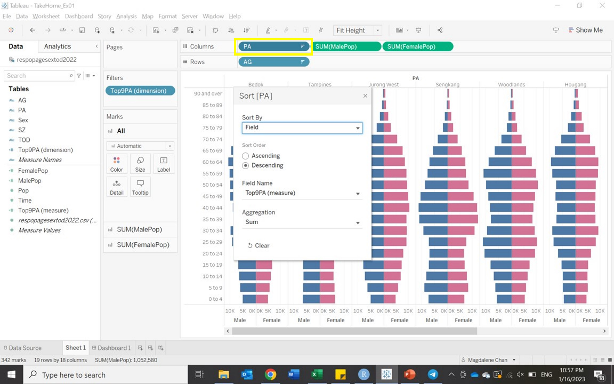
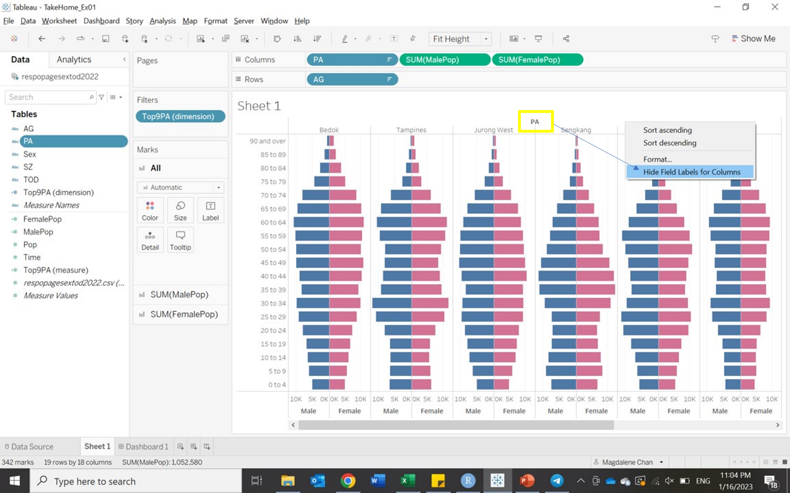
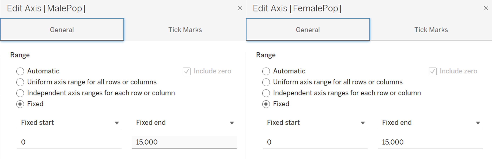
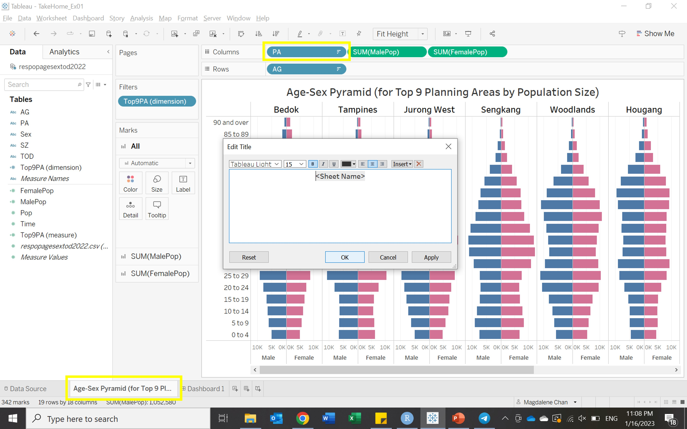

Take Home Exercise 1
Task
In this Take Home Exercise, age-sex pyramids across nine selected planning areas in trellis display are created using Tableau Desktop.
Data Source
The data “Singapore Residents by Planning Area / Subzone, Age Group, Sex and Type of Dwelling, June 2022” used for this Take Home Exercise is obtained from the Department of Statistics, Singapore in csv format.
Creating the Analytical Visualization on Tableau
| No. | Steps | Screenshot |
|---|---|---|
| 1 | Load the csv file into Tableau as follows: Connect To a File > Text file. |  |
| 2 | In a new Worksheet, Age (field: “AG”) is plotted against Population (field: “Pop”) by Gender (field: “Sex”). Since Age is already grouped into bins, this field can be used as-is in the Row shelf. The age groups are sorted in descending order as follows: right-click on AG > Sort > Sort by Data Source Order - Descending. |
 |
| 3 | For a neater look of the final chart, the age group labels are amended to remove the underscores (_) as follows: Data pane > right-click on AG > Aliases > amend labels accordingly. |  |
| 4 | Prior to creating the age-sex pyramid chart, the Population field will need to be split out - one field for each Gender as follows: Analysis > Create Calculated Field. The first calculated field MalePop is created using the following formula:
|
 |
| 4 | Similarly, a second calculated field FemalePop is created with the following formula:
|
 |
| 5 | The two new fields MalePop and FemalePop are then dragged to the Column shelf. |  |
| 6 | To create the age-sex pyramid, right-click on the axis for MalePop to reverse it. The axis title is also renamed to “Male”. |  |
| 7 | Likewise, the axis title for FemalePop is renamed as “Female”. In the Marks card for the aggregation SUM(FemalePop), the colour is also adjusted to pink to display a contrast against MalePop. |  |
| 8 | For the trellis display, age-sex pyramids will be shown for the Top 9 Planning Areas by Population Size. To do this, a calculated field Top9PA (measure) is created with the following formula to compute the total population size for each planning area.
|
 |
| 9 | This calculated field is then duplicated as a dimension field (Top9PA (dimension)) in order to be used as a filter to identify the top 9 planning areas. The dimension field is dragged to the Filters shelf > Top > By field: Top 9 by Top9PA (dimension) - Sum. |  |
| 10 | PA is dragged to the Column shelf and sorted in descending order: right-click on PA > Sort > Sort by Field - Descending - Field Name: Top9PA (measure) - Aggregation: Sum. |  |
| 11 | For a neater look of the final chart, the field labels for the columns are hidden as follows: right-click on field label PA > Hide Field Labels for Columns. |  |
| 12 | ||
| 13 | ||
| 14 | ||
| 15 |
Fig 9b The axis for both MalePop and FemalePop should also be aligned for ease of comparison between both fields within the chart: right-click on the axis for MalePop > Edit Axis > Range - Fixed - Fixed End at 15,000. The same step is repeated for FemalePop.

Fig 10 Lastly, the Sheet Name, and consequently the Sheet Title, is renamed to Age-Sex Pyramid (for Top 9 Planning Areas by Population Size) before it is saved to Tableau Public.

Fig 11
Patterns observed in this Analytical Visualization
.jpg)
The analytical visualization that is presented above consists of age-sex pyramids for nine selected planning areas in Singapore presented in trellis display. Each pane in the trellis display shows the population for a planning area in terms of gender and age. Each pyramid starts at zero population in the center and extends left for the male population (colored in blue) and extends right for the female population (colored in pink). Each bar in the pyramid represents a band of five years and is arranged from birth (at the bottom) to old age (at the top). The selection of planning areas for this visualization is based on population size – the top nine most populous planning areas have been chosen.
In general, none of the age-sex pyramids are considered expansive in nature, i.e. all nine pyramids have relatively narrow bases. This is expected of a highly urbanized and developed country such as Singapore, where there is high life expectancy and low mortality and fertility rates.
Instead, except for Punggol and Seng Kang, most of the top planning areas have constrictive age-sex pyramids, which is characterized by urn-shaped graphs with a narrow base. This observation is likely to be attributed to the presence of highly mature housing estates in these planning areas. Notably, Bedok, Tampines and Hougang appear to be slightly “older” estates, as a greater number of elderly (aged 70 and over) are observed to reside in these planning areas.
In contrast, the population of Punggol and Seng Kang appear to be more characteristic of newer and younger housing estates, where bulk of the population falls within into two main age groups of 30-49 years and 0-19 years. This is likely due to the trend of younger couples moving to newer housing estates like Punggol and Seng Kang over the past decade to start their own families.
Between genders, population trends appear largely similar across the top planning areas. However, among the extremely old (75 and older), the female population is observed to be greater than the male population. This trend is aligned with the gender gap in life expectancy that is observed both globally and locally.